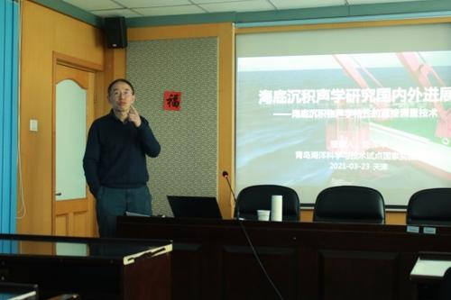
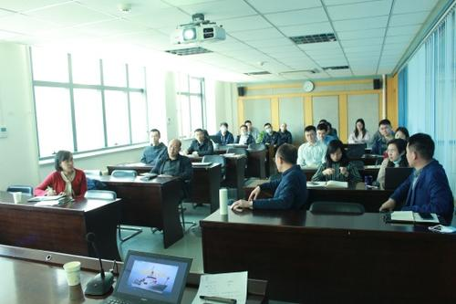
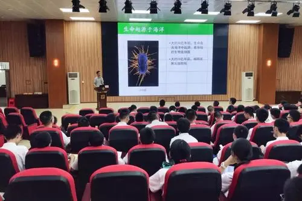
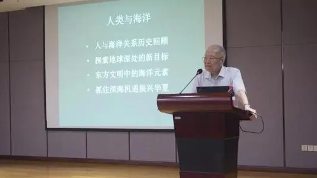
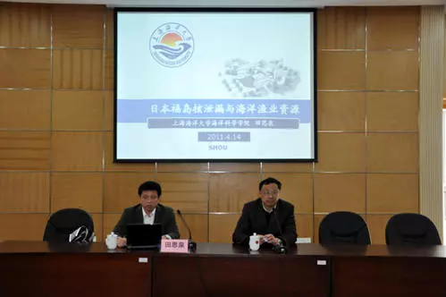

2020年是新中国历史上极不平凡的一年，面对突如其来的新冠肺炎疫情和严峻复杂的国际环境，沿海地区和有关部门以习近平新时代中国特色社会主义思想为指导，全面贯彻党的十九大和十九届二中、三中、四中、五中全会精神，深入落实习近平总书记关于海洋经济的重要指示批示精神，扎实做好“六稳”工作，全面落实“六保”任务，海洋经济发展逐季恢复，结构持续优化，表现出较强韧性，海洋经济高质量发展态势得到进一步巩固。
一、海洋经济总量有所下降，但部分海洋产业快速恢复

2020年，新冠肺炎疫情等因素对海洋经济造成巨大冲击，国内消费受到抑制，外需明显下滑，海洋经济出现2001年有统计数据以来的首次负增长，《2020年中国海洋经济统计公报》显示，2020年我国海洋生产总值比上年下降5.3%。尤其是作为我国海洋生产总值占比最大的滨海旅游业，受疫情冲击最大，旅游景区关停，游客锐减，产业增加值与上年相比下降了24.5个百分点，是海洋经济整体下降的主要原因之一。除滨海旅游业以外，海洋油气业、海洋渔业、海洋交通运输业、海洋工程建筑业、海洋船舶工业等海洋产业快速复苏，产业增加值实现正增长，增速分别为7.2%、3.1%、2.2%、1.5%和0.9%。
二、政策助力企业效益恢复，保市场主体取得实效

为应对疫情影响，党中央、国务院及时加大宏观政策应对力度，有序复工复产，大力助企纾困。有关部门和沿海地方政府出台了推迟缴纳海域使用金、提高供水补贴和用电优惠、加大财政奖励等一系列政策措施，助力海洋产业企稳回升，海洋经济活动单位经营效益逐步恢复，市场活力不断释放，保市场主体任务取得实效。调查监测结果显示，76%的海洋经济活动单位就业人数比上年年底增长或持平；全年重点监测的规模以上海洋工业企业营收、利润降幅连续7个月收窄；全年营业收入利润率为4.6%，比前三季度增加0.3个百分点；全年每百元营业收入中成本为83元，比前三季度下降0.8个百分点。重点监测行业中新登记海洋经济活动单位比上年下降15.6%，降幅连续9个月收窄。
三、海洋能源供应逆势增长，民生保障进一步改善

海洋能源供给保障能力持续增强，全年海洋原油产量5164万吨，比上年增长5.1%；海洋天然气产量186亿立方米，比上年增长14.5%。截至2020年底，在我国管辖海域11个油气开发新项目投产，为海上油气开发实现新增长奠
定了基础。海洋清洁能源发展势头强劲，2020年，全国海上风电新增装机306万千瓦，比上年增长54.5%，LHD海洋潮流能发电站实现连续并网发电46个月，向国家电网送电量超200万千瓦时。同时，海洋经济在民生保障方面发挥了积极作用。“2020年抗病毒海洋药物研究专项”启动，构建了靶点模型并向社会开放共享，加速了抗病毒药物筛选进程。蓝色粮仓供应潜力进一步释放，全年新增国家级海洋牧场示范区26个，累计已达136个。海洋公共服务产品持续为社会公众提供便利，为避免人员经济损失，2020年共发布海洋灾害预警230次，其中风暴潮预警61次，海浪预警169次。
四、海洋装备制造实力显著增强，海洋领域产业链供应链持续优化

我国持续推进海洋领域科技创新，海洋装备成果丰硕，有效提高了海洋产业链供应链现代化水平。海洋渔业高技术专业化快速发展，10万吨级智慧渔业大型养殖工船中间试验船“国信101”号正式交付，开展了大黄鱼、大西洋鲑等主养品种深远海工船养殖中试试验，构建了深远海绿色养殖新模式。海洋船舶研发建造向高端化发展，17.4万方液化天然气（LNG）船、9.3万方全冷式超大型液化石油气船（VLGC）等实现批量接单；23000标准箱（TEU）双燃料动力超大型集装箱船、节能环保30万吨超大型原油船（VLCC）、18600立方米液化天然气（LNG）加注船、大型豪华客滚船“中华复兴”号等顺利交付。深海技术装备研发实现重大突破，我国首艘万米级载人潜水器“奋斗者”号在马里亚纳海沟成功坐底，坐底深度10909米，创造了中国载人深潜的新纪录。海水利用技术取得新进展，开展了100万平方米超滤、纳滤及反渗透膜规模化示范应用，形成了5千吨/年海水冷却塔塔心构建加工制造能力。海上风电机组研发向大兆瓦方向发展，产业链条进一步延伸。国内首台自主知识产权8MW海上风电机组安装成功，10MW海上风电叶片进入量产阶段。
五、数字赋能产业转型升级，海洋领域新业态新模式不断涌现

新冠肺炎疫情为海洋领域的数字经济发展带来新机遇，海洋信息在保障人民生活、对冲行业压力、带动海洋经济复苏等方面发挥了积极作用。数字渔业赋能产业振兴，国内领先运用“北斗+互联网+渔业”的一站式渔业综合服务平台“海上鲜”覆盖了41个渔港。能源综合利用助力渔业养殖，采用光伏+风力发电相融合的5G海洋牧场平台“耕海一号”交付。海洋船舶实现在线交易常态化，利用“云洽谈”“云签约”“云交付”等模式，在保交船、争订单方面成效显著。5G、人工智能、大数据、无接触服务等技术逐步改变海洋领域传统的流通、消费和服务方式，为公众提供新体验。海上风电场向智能化方向发展，国内首个智慧化海上风力发电场在江苏实现了并网运行。
六、海洋对外贸易发展总体向好，对外开放新格局向高水平迈进
海洋对外贸易在新冠肺炎疫情和逆全球化浪潮下逐季向好。我国与
“21世纪海上丝绸之路”沿线国家货物进出口总额达到12624亿美元，比上年增长1.2%，对稳定国家对外贸易起到重要支撑作用。海运贸易逆流而上，干散货、铁矿石、原油以及液化天然气进口量大幅增长；海运出口量逐季改善，四季度实现正增长。
2021年，我国海洋经济将延续恢复性增长态势，市场需求将逐步释放，滨海旅游等海洋产业将会快速反弹。未来，我们将在以习近平同志为核心的党中央坚强领导下，坚定不移贯彻新发展理念，与各方一道，努力在危机中育新机，于变局中开新局，共同推动海洋经济高质量发展。（国家海洋信息中心主任
何广顺）